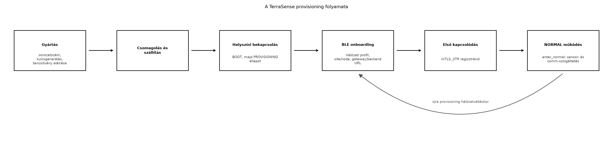

A TerraSense üvegház-telepítés során több tucat vagy akár több száz
ts-node kerül ki a helyszínekre. Mindegyiknek egyedi
azonosítóval, saját tanúsítvánnyal és a helyi hálózatra érvényes
konfigurációval kell rendelkeznie, mielőtt az első telemetriai üzenetet
elküldheti. Ha a gyártósoron minden eszközbe ugyanazt a privát kulcsot
és tanúsítványt írnánk, egyetlen eszköz kompromittálódása az egész
flottát veszélyeztetné. Ha viszont minden eszközt kézzel regisztrálnánk
a backendben, az üzembe helyezés lassú, hibás és drága lenne. A
provisioning és az onboarding éppen ezt a két problémát oldja meg:
automatizálja az identitás kiadását, és a helyszíni beállítást
biztonságos, de kezelhető folyamattá teszi.
Definíció. A provisioning az a folyamat, amelynek során az eszköz megkapja az egyedi identitását (sorozatszám, kulcs, tanúsítvány), valamint a kezdeti biztonsági és konfigurációs anyagokat. Az onboarding ennek a helyszíni, jellemzően a hálózati csatlakozást és a felügyeleti rendszerbe való bevezetést magában foglaló része. A zero-touch provisioning (ZTP) olyan automatizált folyamat, amely minimális emberi beavatkozással juttatja el az eszközt a gyártótól a működő állapotig. A just-in-time regisztráció (JITR) pedig olyan backend-oldali mechanizmus, amely az eszköz első, hiteles kapcsolódásakor automatikusan hozza létre az eszköznyilvántartási rekordot.
A gyártósor a ts-node minden egyes példányához
hozzárendel egy monoton növekvő sorozatszámot, például
TS-0001. A kritikus lépés a kulcspár generálása: ezt
lehetőség szerint közvetlenül az eszközön, egy biztonságos elemben
(secure element) kell végrehajtani, hogy a privát kulcs soha ne hagyja
el a hardvert. Ha a gyártósor egyszerűbb, szoftveres kulcsgenerálást
használ, a privát kulcsot a gyártás során, védett környezetben írják a
flash-be. A publikus kulcsból tanúsítvány-kérelmet (CSR) készítenek,
amelyet a gyártó vagy a megrendelő CA-ja ír alá. Az így kapott X.509
tanúsítvány tartalmazza a sorozatszámot (például a CN mezőben), a
szervezetet, és opcionálisan SAN-mezőben az eszköz URI-ját. A
tanúsítvány láncot és a CA tanúsítványt is eltárolják az eszközön.
A telepítő szakember a helyszínen bekapcsolja a
ts-node-ot. Az eszköz a BOOT állapot után –
amelyet az Eszközszoftver-architektúra: rétegek és
állapotgépek alfejezetben definiáltunk – észleli, hogy a
provisioned flag nem igaz, ezért a
PROVISIONING állapotba lép. Itt a rádió BLE perifériaként
hirdet, például TS-PROV-<sorozatszám> néven. A
telepítő egy laptopon vagy mobilon futó ts-provision
CLI-vel csatlakozik, és megadja a hálózati profilt, a site és node
azonosítókat, valamint a gateway és a backend végpontját. A labor
alapértelmezett native_sim-udp profiljában nincs Wi-Fi: a
node a gateway UDP-címére küld, ahogy az IP az
eszközön és a MQTT a gyakorlatban laborban
szerepelt. Opcionális, valós Wi-Fi hardveren a wifi profil
adja át az SSID-t és a jelszót; a BLE-kapcsolatot ilyenkor párosítással
(pairing) és titkosítással kell védeni, hogy a hálózati hitelesítő
adatok ne szivárogjanak. A ts-node a kapott adatokat a
Zephyr settings/NVS rétegében tárolja, és csak a sikeres
settings_save_one után állítja be a
provisioned flaget, majd APP_EVT_PROVISIONED
eseménnyel a NORMAL állapotba lép (a közös
enter_normal() útvonalon, amely elindítja a sensor- és
comm-szolgáltatást). A NORMAL állapotban a
native_sim-udp profil a gatewaynek küld UDP-telemetriát, a
wifi profil pedig csatlakozik a megadott SSID-hez, és onnan
éri el a broker/gateway végpontot.
A backend az eszközöket egy nyilvántartásban tartja, amelyben minden rekord tartalmazza legalább a sorozatszámot, a site/node azonosítókat, a tanúsítvány ujjlenyomatát és a regisztráció állapotát. Kézi onboarding esetén a rendszergazda előre felveszi az eszközöket. JITR esetén a backend az első TLS-kézfogás során kapott tanúsítványt ellenőrzi a gyártói CA-val, majd ha érvényes, automatikusan létrehozza a rekordot. Ez gyors, de csak akkor biztonságos, ha a CA privát kulcsa megfelelően védett; különben bárki regisztrálhat hamis eszközt.
A Matter okosotthon-szabvány (korábbi nevén Project CHIP) hasonló onboarding-jellegű mechanizmust definiál: a készülék egy beállítási kódot (setup code) és QR-kódot tartalmaz, BLE-n vagy hálózaton keresztül fogadja a hálózati hitelesítő adatokat, majd IP-alapú szolgáltatásokkal regisztrálja magát a Matter-ökoszisztémában. A TerraSense-ben saját, egyszerűbb folyamatot használunk, de a koncepció analóg. A Matter specifikus lépései és az aktuális verziók ellenőrzési igényűek.

A folyamat azért kapcsolódik szorosan az életciklus-állapotgéphez,
mert a PROVISIONING állapot csak akkor aktív, ha a
provisioned flag hamis, vagy ha a felhasználó explicit
módon gyári visszaállítást kér. Új hálózatra költözéskor a technikus
törli a beállított konfigurációt, így az eszköz újra a
PROVISIONING állapotba kerül.
A választás alapvetően a flotta méretétől, a telepítői szakértelemtől és a biztonsági követelményektől függ.
| Szempont | Zero-touch (ZTP) | Kézi onboarding (pl. BLE CLI) |
|---|---|---|
| Emberi beavatkozás | minimális, gyakran csak áram alá helyezés | minden eszköznél szükséges |
| Hálózati hitelesítő adás | előre telepített, gyártósori vagy hálózati bootstrap | technikus adja meg |
| Biztonsági kockázat | a gyártósori konfiguráció és a bootstrap csatorna védelme kritikus | a BLE párosítás és a technikus képzése a kulcs |
| Költség gyártásban | magasabb (biztonságos elem, tesztelés) | alacsonyabb |
| Költség üzembe helyezésben | alacsony | magas, hibalehetőséggel |
| Alkalmazási példa | nagy távközlési vagy energiaszolgáltatói flotta | egyedi üvegházak, kis telephelyek |
A TerraSense mintarendszerben a kézi BLE onboarding mellett döntöttünk, mert a célkörnyezet kis flotta, ahol a telepítő szakember jelen van, és a gyártósori automatikus konfiguráció aránytalanul drága lenne. A JITR-t viszont bekapcsoljuk, mert így nem kell minden eszközt előre kézzel regisztrálni a backendben.
A következő labor azt mutatja be, hogyan néz ki a TerraSense
provisioning a gyakorlatban. Mivel a native_sim
környezetben valódi BLE nincs, a BLE-s onboarding üzenetváltást egy
Python CLI szimulálja: a technikus „csatlakoztatja” az eszközt, átadja a
konfigurációt, a script pedig elvégzi a tanúsítványgenerálást és a
backend JITR regisztrációját. Valós hardveren ugyanez a config a BLE
GATT íráson keresztül érkezne meg a Zephyr settings-be.
Munkakönyvtár: ~/iot-labor/i059
mkdir -p ~/iot-labor/i059/devices ~/iot-labor/i059/ca
cd ~/iot-labor/i059
# Labor-CA létrehozása, ha az i056-ból még nem áll rendelkezésre
openssl ecparam -genkey -name prime256v1 -out ca/ca.key
openssl req -x509 -new -key ca/ca.key -sha256 -days 3650 \
-subj "/C=HU/O=TerraSense Lab/CN=TerraSense Lab CA" -out ca/ca.crtHozzuk létre a provisioning scriptet
provision_ts_node.py néven:
#!/usr/bin/env python3
import argparse, fcntl, hashlib, json, os, pathlib, re, shutil, subprocess, sys, tempfile, datetime
SERIAL_RE = re.compile(r"^TS-[0-9]{4,8}$")
ID_RE = re.compile(r"^[a-z0-9][a-z0-9_-]{0,31}$")
def run(cmd):
subprocess.run(cmd, check=True)
def utc_now():
return datetime.datetime.now(datetime.timezone.utc).isoformat()
def cert_fingerprint(cert_path):
# A PEM-fájl bájtjai helyett a DER-kódolt tanúsítvány SHA-256 lenyomata.
der = subprocess.run(
["openssl", "x509", "-in", str(cert_path), "-outform", "DER"],
check=True, capture_output=True).stdout
return hashlib.sha256(der).hexdigest()
def atomic_write(path, text):
path = pathlib.Path(path)
fd, tmp = tempfile.mkstemp(dir=path.parent, prefix=path.name + ".", suffix=".tmp")
try:
with os.fdopen(fd, "w", encoding="utf-8") as f:
f.write(text)
f.flush()
os.fsync(f.fileno())
os.replace(tmp, path)
finally:
if os.path.exists(tmp):
os.unlink(tmp)
def load_registry(path):
return json.loads(path.read_text(encoding="utf-8")) if path.exists() else {}
def main():
p = argparse.ArgumentParser(description="TerraSense ts-node provisioning")
p.add_argument("--serial", required=True)
p.add_argument("--site", required=True)
p.add_argument("--node", required=True)
p.add_argument("--network-profile", choices=("native_sim-udp", "wifi"),
default="native_sim-udp")
p.add_argument("--gateway-host", default="127.0.0.1")
p.add_argument("--gateway-port", type=int, default=4000)
p.add_argument("--ssid")
p.add_argument("--password")
p.add_argument("--backend-url", default="mqtts://broker.local:8883")
p.add_argument("--ca-dir", required=True)
p.add_argument("--authorized-sites", default="authorized-sites.json")
p.add_argument("--rotate", action="store_true",
help="meglévő sorozatszám kulcsának rotációja")
p.add_argument("--reason", default="")
args = p.parse_args()
if not SERIAL_RE.fullmatch(args.serial):
sys.exit("Érvénytelen sorozatszám (várt alak: TS-0001)")
if not ID_RE.fullmatch(args.site) or not ID_RE.fullmatch(args.node):
sys.exit("Érvénytelen site vagy node azonosító")
if args.network_profile == "wifi" and (not args.ssid or not args.password):
sys.exit("A wifi profilhoz --ssid és --password kell")
if args.rotate and not args.reason:
sys.exit("A rotációhoz --reason kötelező")
auth_path = pathlib.Path(args.authorized_sites)
if auth_path.exists():
allowed_sites = json.loads(auth_path.read_text(encoding="utf-8")).get("sites", [])
if args.site not in allowed_sites:
sys.exit(f"A site ({args.site}) nincs engedélyezve a JITR számára")
else:
print("FIGYELEM: nincs authorized-sites.json; a labor minden site-ot elfogad")
devices_root = pathlib.Path("devices").resolve()
base = (devices_root / args.serial).resolve()
if devices_root not in base.parents:
sys.exit("A célútvonal a devices könyvtáron kívülre mutat")
ca_crt = pathlib.Path(args.ca_dir) / "ca.crt"
ca_key = pathlib.Path(args.ca_dir) / "ca.key"
if not ca_crt.exists() or not ca_key.exists():
sys.exit("CA fájlok nem találhatók")
reg_path = pathlib.Path("devices.json")
audit_path = pathlib.Path("devices-audit.jsonl")
lock_path = pathlib.Path(".devices.lock")
# A nyilvántartás olvasás-ellenőrzés-írás szakasza zárolt és atomikus.
with open(lock_path, "w") as lock:
fcntl.flock(lock, fcntl.LOCK_EX)
devices = load_registry(reg_path)
if args.serial in devices and not args.rotate:
sys.exit("Sorozatszám már regisztrálva; rotációhoz használja a --rotate kapcsolót")
if args.rotate and args.serial not in devices:
sys.exit("A --rotate csak már regisztrált sorozatszámhoz használható")
if base.exists() and any(base.iterdir()):
if args.serial not in devices:
sys.exit("Befejezetlen korábbi provisioning; előbb tisztázza a devices/<serial> könyvtárat")
if not args.rotate:
sys.exit("A devices/<serial> már létezik; rotációhoz --rotate")
archive = base / "archive" / datetime.datetime.now().strftime("%Y%m%dT%H%M%SZ")
archive.mkdir(parents=True, exist_ok=True)
for name in ("device.key", "device.csr", "device.crt", "provisioning.json"):
src = base / name
if src.exists():
shutil.move(str(src), str(archive / name))
base.mkdir(parents=True, exist_ok=True)
# Eszközkulcs és CSR generálása, majd aláírás a labor-CA-val
run(["openssl", "ecparam", "-genkey", "-name", "prime256v1",
"-out", str(base / "device.key")])
run(["openssl", "req", "-new", "-key", str(base / "device.key"),
"-subj", f"/C=HU/O=TerraSense/CN=ts-node-{args.serial}",
"-out", str(base / "device.csr")])
run(["openssl", "x509", "-req", "-in", str(base / "device.csr"),
"-CA", str(ca_crt), "-CAkey", str(ca_key),
"-CAcreateserial", "-days", "3650",
"-out", str(base / "device.crt"), "-sha256"])
# JITR szimuláció: tanúsítvány ellenőrzése
run(["openssl", "verify", "-CAfile", str(ca_crt), str(base / "device.crt")])
fingerprint = cert_fingerprint(base / "device.crt")
now = utc_now()
config = {
"serial": args.serial,
"site": args.site,
"node": args.node,
"network_profile": args.network_profile,
"gateway": {"host": args.gateway_host, "port": args.gateway_port},
"backend_url": args.backend_url,
"provisioning_ts": now,
}
if args.network_profile == "wifi":
config["wifi"] = {"ssid": args.ssid, "password": args.password}
(base / "provisioning.json").write_text(json.dumps(config, indent=2))
record = {
"serial": args.serial,
"site": args.site,
"node": args.node,
"network_profile": args.network_profile,
"cert_fingerprint_sha256": fingerprint,
"status": "provisioned",
"onboarded_at": now,
}
if args.serial in devices:
record["previous_fingerprint_sha256"] = \
devices[args.serial].get("cert_fingerprint_sha256")
record["rotated_at"] = now
record["rotation_reason"] = args.reason
# A régi tanúsítvány visszavonása külön lépés (i061 CRL-szolgáltatás).
record["revocation_required"] = True
action = "rotate"
else:
action = "provision"
devices[args.serial] = record
atomic_write(reg_path, json.dumps(devices, indent=2))
with audit_path.open("a", encoding="utf-8") as audit:
audit.write(json.dumps({
"ts": now,
"action": action,
"serial": args.serial,
"fingerprint_sha256": fingerprint,
"reason": args.reason,
}) + "\n")
print(f"Provisioning kész: {args.serial} ({action})")
if __name__ == "__main__":
main()A script a sorozatszámot ^TS-[0-9]{4,8}$, a site/node
azonosítókat ^[a-z0-9][a-z0-9_-]{0,31}$ mintával ellenőrzi,
a célútvonalat pedig resolve() után a devices
könyvtáron belülre kényszeríti. Így a ../-t vagy abszolút
utat tartalmazó serial nem írhat a könyvtáron kívülre, és a strict minta
miatt a -subj sem kaphat további RDN-t (például
/CN= vagy új sor karaktert).
A devices.json frissítése fcntl.flock-kal
zárolt olvasás-ellenőrzés-írás szakaszban, atomikusan történik: a script
ideiglenes fájlba ír, fsync-el, majd
os.replace-szel cseréli le a nyilvántartást. Így párhuzamos
futás vagy megszakítás nem hagy félkész devices.json-t.
Alapértelmezésben a már regisztrált sorozatszámot megtagadja; rotációhoz
--rotate --reason "..." kell, ekkor a régi kulcs és
tanúsítvány a
devices/<serial>/archive/<időbélyeg>/ alá
kerül, a rekord pedig previous_fingerprint_sha256,
rotated_at, rotation_reason mezőt kap, és a
művelet bekerül a devices-audit.jsonl naplóba. A régi
tanúsítvány visszavonása külön lépés (az Flottakezelés CRL-szolgáltatása); a rotáció csak
megjelöli revocation_required=true értékkel.
A cert_fingerprint_sha256 nem a PEM-fájl bájtjainak,
hanem a DER-kódolt tanúsítvány SHA-256 lenyomata, ezért megegyezik az
openssl x509 -in device.crt -noout -fingerprint -sha256
kimenetével (a kettőspontok nélkül).
A labor a JITR engedélyezési pontját is modellezi:
csak az authorized-sites.json fájlban felsorolt site-okra
fogad el provisioningot. Hozzuk létre ezt a fájlt:
cat > authorized-sites.json <<'EOF'
{"sites": ["gh1"]}
EOFEgy megbízható CA-tól származó, de nem engedélyezett site-ra (például
--site gh2) kért eszköz így elutasításra kerül, nem kerül
automatikusan a nyilvántartásba.
A JITR-szimuláció korlátai. A script nem végez valódi TLS-kézfogást, nem igazolja a privát kulcs birtoklását (proof of possession) a szerver felé, és az engedélyezést egy helyi JSON-lista modellezi. A valódi JITR a backend oldalán a TLS-kézfogáskor ellenőrzi a tanúsítványláncot, a CN/SAN és a kért site/node megfelelését, majd egy engedélyezési szabály (allowlist, jóváhagyás, esetleg attestation) alapján dönt a regisztrációról. A labor ezt a döntési pontot szimulálja, nem a teljes JITR-folyamatot; a proof of possession és a szerveroldali engedélyezés a záróprojekt feladata.
Futtassuk le egy ts-node példányra a labor
alapértelmezett, native_sim UDP-profiljával:
python3 provision_ts_node.py --serial TS-0001 --site gh1 --node n001 \
--network-profile native_sim-udp --gateway-host 127.0.0.1 --gateway-port 4000 \
--backend-url mqtts://broker.local:8883 --ca-dir caOpcionális, valós Wi-Fi hardveren ugyanez a wifi
profillal, ahol a hálózati hitelesítő adatok is átadódnak:
python3 provision_ts_node.py --serial TS-0002 --site gh1 --node n002 \
--network-profile wifi --ssid TerraSenseAP --password labtitok \
--backend-url mqtts://broker.local:8883 --ca-dir caVárt kimenet:
Provisioning kész: TS-0001 (provision)A devices/TS-0001/ könyvtárban megjelenik a
device.key, device.csr,
device.crt és provisioning.json. A
devices.json nyilvántartásba bekerül a rekord a tanúsítvány
DER-alapú SHA-256 ujjlenyomatával. A tanúsítványt a
openssl verify parancs a labor-CA-val szemben ellenőrzi,
ami a JITR szimulációja. A provisioning.json tartalma a
következő (a pontos időbélyeg eltérhet):
{
"serial": "TS-0001",
"site": "gh1",
"node": "n001",
"network_profile": "native_sim-udp",
"gateway": {"host": "127.0.0.1", "port": 4000},
"backend_url": "mqtts://broker.local:8883",
"provisioning_ts": "2025-01-01T00:00:00+00:00"
}A wifi profilban a fenti objektum kiegészül egy
"wifi": {"ssid": "TerraSenseAP", "password": "labtitok"}
blokkal; a native_sim-udp profil szándékosan nem tartalmaz
Wi-Fi-hitelesítő adatot, mert a szimulált node UDP-n küld a gatewaynek,
és nem csatlakozik Wi-Fihez.
Takarítás csak a labor saját fájljaira terjedhet ki:
rm -rf ~/iot-labor/i059/devices ~/iot-labor/i059/devices.json ~/iot-labor/i059/caA sikeres provisioning után három dolgot kell ellenőrizni: a
tanúsítvány érvényes-e (a openssl verify kimenetében
OK szerepel), a devices.json tartalmazza-e az
új rekordot, és a provisioning.json site/node azonosítói
helyesek-e. A native_sim-udp profilban a
NORMAL állapotba lépés után a gateway UDP-portján (4000)
megjelenő telemetria, majd a gateway MQTT-publikációja igazolja a
működést; valós wifi hardveren a Wi-Fi-csatlakozás és az
MQTT terrasense/gh1/n001/status retained üzenet megjelenése
is ellenőrizendő.
| Tünet | Lehetséges ok | Javítás |
|---|---|---|
openssl verify hibát ad |
a CA-tanúsítvány nem egyezik, vagy a lánc hiányos | ellenőrizze a --ca-dir útvonalat és a CA-t |
| A script nem találja a CA fájlokat | rossz munkakönyvtár vagy hiányzó CA | futtassa a labor CA-létrehozó parancsát, vagy másolja az Eszközidentitás: X.509-tanúsítványok, PKI és kulcstárolás alfejezetből |
| Az eszköz nem lép NORMAL állapotba | a provisioned flag nem íródott be a settings-be |
ellenőrizze a Zephyr settings hívásokat és a flash-t |
| A JITR elutasítja az eszközt | a tanúsítvány lejárt, vagy a CN nem illeszkedik a sorozatszámhoz | frissítse a tanúsítványt, illetve javítsa a kiállítási paramétereket |
provisioning.json csak a wifi profilban, a
laborban egyszerűsítésből tartalmazza a Wi-Fi jelszót; a
native_sim-udp profil nem tartalmaz Wi-Fi-hitelesítő
adatot. Éles rendszerben a jelszót titkosítva, például a Zephyr settings
titkosított részében vagy secure elementben kell tárolni.devices.json nyilvántartási sémáját úgy, hogy az támogassa
a flotta későbbi kezelését (például parancsok küldése, OTA-csoportok).
Milyen mezőket venne fel a mostani rekordba?provision_ts_node.py scriptet úgy, hogy ellenőrizze a
sorozatszám egyediségét, és már regisztrált sorozatszám esetén hibával
lépjen ki.ts-node nem
tud csatlakozni a backendhez, mert a JITR elutasítja. Soroljon fel
legalább három lehetséges okot, és mindegyikhez adjon diagnosztikai
lépést.devices.json rekordba például érdemes felvenni:
ota_group, firmware_version,
last_seen_ts, desired_state,
reported_state, tags. Ez lehetővé teszi a
flottakezelést (Flottakezelés: nyilvántartás,
konfiguráció, állapot) és az OTA-csoportos frissítést (OTA-frissítés: A/B képek, rollback, delta, fokozatos
kiadás).devices.json zárolt betöltése után
ellenőrzi, hogy a args.serial már kulcsként szerepel-e; ha
igen és nincs --rotate,
sys.exit("Sorozatszám már regisztrálva..."). A rotáció
külön, indoklással (--reason) történik, a régi kulcsot és
tanúsítványt archiválja, a registry
previous_fingerprint_sha256/rotated_at mezővel
és auditbejegyzéssel frissül; a régi tanúsítvány tényleges visszavonása
a Flottakezelés: nyilvántartás, konfiguráció,
állapot CRL-lépése. Ez a JITR megelőzése is: a backendnek sem szabad
kétszer regisztrálnia.openssl verify, a
tanúsítvány lejárati idejének ellenőrzése, a CN kiírása, a backend logok
megtekintése.A TerraSense provisioning két szakaszból áll: a gyártás során minden
ts-node egyedi sorozatszámot (pl. TS-0001),
saját ECC-kulcspárt és a labor-CA által aláírt X.509 tanúsítványt kap. A
helyszíni onboarding BLE-kapcsolaton keresztül történik: a technikus
megadja a hálózati profilt (native_sim-udp a laborhoz,
wifi opcionális hardverhez), a site/node azonosítókat
(gh1, n001), a gateway UDP-címét és a backend
MQTT/TLS URL-jét. A ts-node ezt a Zephyr settings/NVS-ben
tárolja, a provisioned flaget csak sikeres mentés után
állítja be, majd APP_EVT_PROVISIONED eseménnyel a
NORMAL állapotba lép, ahol az enter_normal()
elindítja a sensor- és comm-szolgáltatást; a native_sim-udp
profil UDP-n küld a gatewaynek, a wifi profil pedig a
megadott SSID-hez csatlakozik. A backend JITR-t használ: az első
TLS-kézfogás tanúsítványát ellenőrzi, és automatikusan felveszi az
eszközt a devices.json nyilvántartásba. A laborfájlok:
~/iot-labor/i059/provision_ts_node.py,
~/iot-labor/i059/devices/TS-0001/ és
~/iot-labor/i059/devices.json. Továbbvitt
eredmény: ez a provisioning-folyamat, a
devices.json rekordséma és a sorozatszám-konvenció szolgál
alapul a Flottakezelés: nyilvántartás, konfiguráció,
állapot és a Záróprojekt: a teljes TerraSense
rendszer összeállítása és átvétele alfejezetekben.
A tanúsítványkezelés alapelvei az X.509 szabványból (RFC 5280) és a TLS 1.3 specifikációból származnak. A BLE onboarding koncepciója a Bluetooth SIG specifikációin alapul. A Matter onboarding-rész kifejezetten ellenőrzési igényű: a konkrét setup code formátum, a BLE-szolgáltatások UUID-jei és a hálózati bootstrap üzenetek a Connectivity Standards Alliance aktuális dokumentációjától függenek. A Zephyr settings/NVS API-k és a biztonságos elem támogatás konkrét Kconfig- és devicetree-beállításai a Zephyr aktuális kiadásának dokumentációjában ellenőrizhetők.